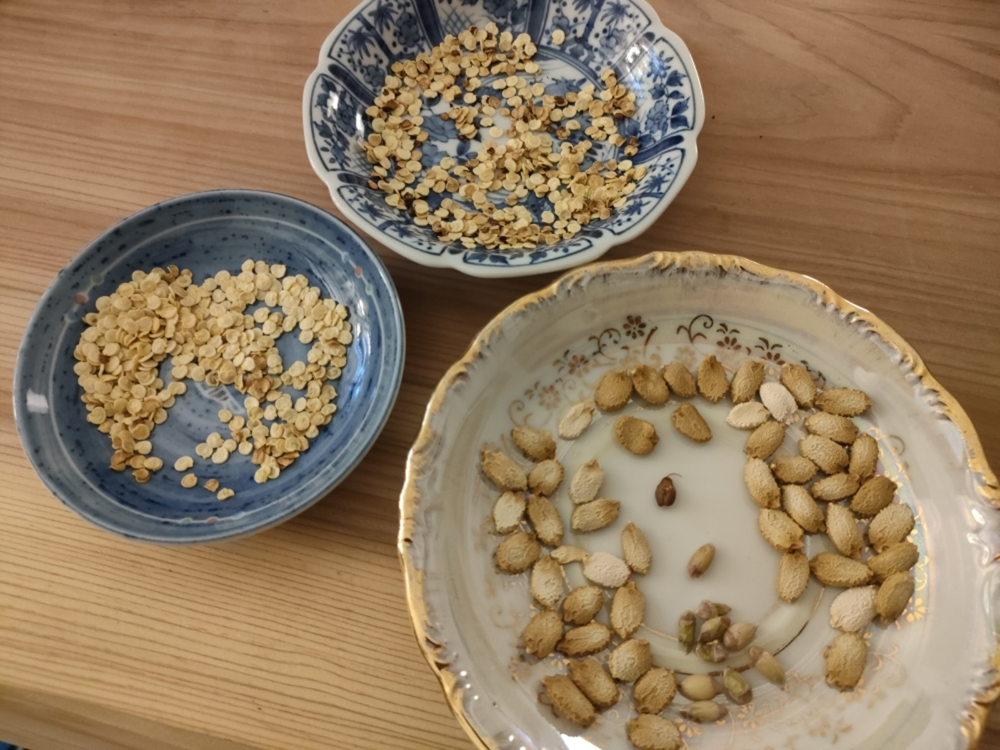

0008 タネの採取と土づくり

こんにちは、hanaponです。
島に住んでいること、世の中が変わり始めていること、サイクル（自転車）つながり？という意味合いでサステナブルな生活を志向し始めました。
以前から江戸時代における循環性のある生活に興味がありました。
サステナブルとは言っても、自分で出来ることには限りもあるのですが、まずは趣味から始めてみようと思い・・・
いろいろ考えた結果、
（１）ポタリングしながら島で採れた野菜を中心に購入していること、
（２）自炊をしていること、
（３）元々、土いじりが好き
などから、ベランダ菜園をめざし始めました！（笑）。
‹br›野菜から出るタネを採取開始↓

F1であれば採っても意味はない？のですが、今のところ、ゴーヤや赤・緑・黄色のピーマン、すだち、ぶどうを採取しました。
乾燥させて冷蔵庫で保管へ。
追肥用の土づくりも開始しました。ゴミ箱にゴミ袋を設置し、買ってきた土を入れました。

野菜くずや魚の骨、肉の骨などをある程度日干して、細かく切って入れます↓


土の匂いは癒されますね。
さあ、ベランダに設置するテーブルと鉢あるいはZiplocを買って次へ進みましょう！